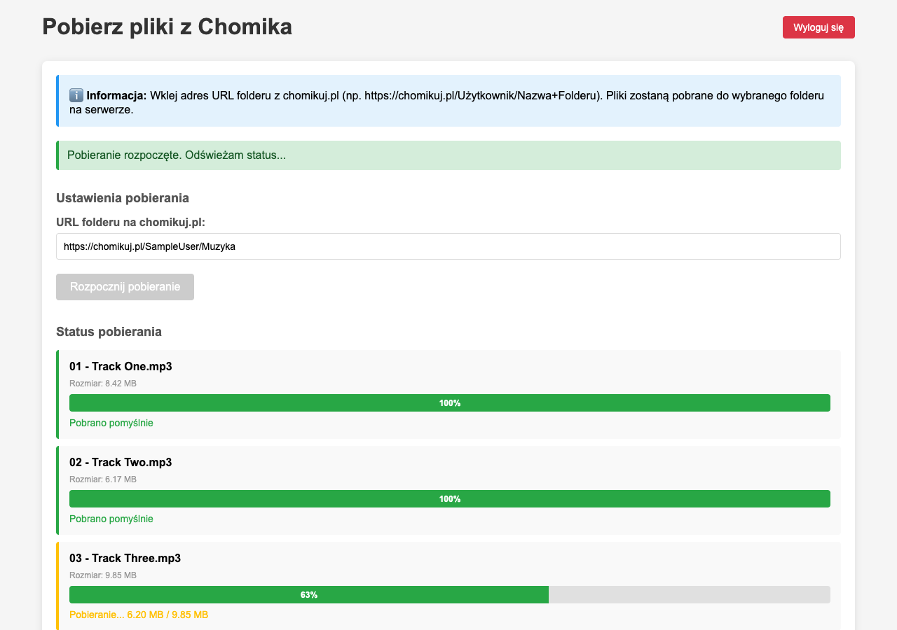

Panel internetowy
Chomik Downloader
Pobiera całe foldery z chomikuj.pl prosto na twój serwer NAS. Wklej link do folderu, wybierz opcje i obserwuj na żywo w przeglądarce postęp pobierania każdego pliku.
- Pobieranie rekurencyjne z podfolderami
- Zachowuje oryginalną strukturę folderów
- Wznawia przerwane pobieranie
- Filtry według typu i rozmiaru pliku
- Opcjonalne hasło do panelu
